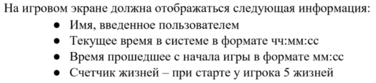
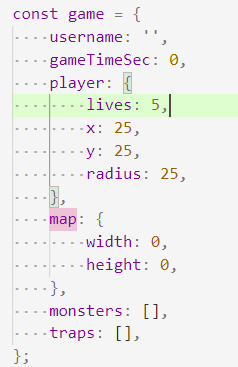
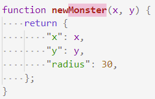
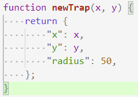

202203011636 Модель/Состояние Игры
Перед тем как начать писать логику игры, нужно определить какие данные там будут, и от каких параметров будет зависеть игра:
Во-первых, это те данные которые явно заданы в ТЗ:

Во-вторых нам понадобятся данные об:
- Игроке (координаты, радиус и счетчик жизней)
- Монстрах (массив с координатами, радиус)
- Ловушках (массив с координатами, радиус)
- Границах/размерах карты
Общая модель (состояние) игры
Минимальный вариант получается такой:

Обратите внимание: мы не храним системное время, так как оно и так хранится в системе, и мы можем его просто выводить напрямую.
Функции для создания Монстров и Ловушек
Параметры игрока были заданы ещё в общей модели. А вот параметры монстров и ловушек - нет. Так как они будут добавляться позже. Однако мы можем оформить их создание в функции, где зададим радиус, который не будет меняться в игре:

